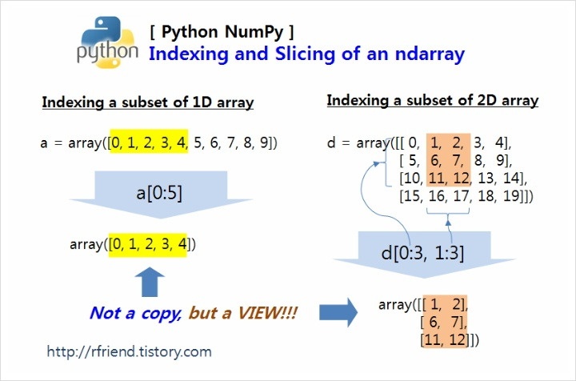

Korean Link

In [ 2 ]: a = np.arange (10)
In [ 3 ]: a
Out[ 3 ]: array([0, 1, 2, 3, 4, 5, 6, 7, 8, 9])
출처: https://rfriend.tistory.com/290 [R, Python 분석과 프로그래밍의 친구 (by R Friend):티스토리]
Following Description states that in Numpy when you grab a portion of a data frame to a variable, it becomes a reference of that
data frame. So when you change the reference variable, it actually also change the original data frame too.
If you are an R user, you will be very confused when you see the above situation. In R, indexing always results in a copy, and the original array and the indexed array are considered completely separate, independent objects. So in my case, if the array is very large, I would index only a very small part, and then do various data manipulation tests with the small-sized indexed array, and then apply the final R script that was confirmed to work properly to the original large array. Whatever I did to the indexed array had no effect on the original array.
On the other hand, in the case of Python NumPy's array, I didn't know at first that if I did something to the indexed array, it would be reflected in the original array. So after doing this and that test on the indexed array, I saw that the original array had been corrupted(?) and I thought, 'What is this? Why is this happening? What happened? Is this a bug?'... That's what I thought. I thought like that for a long time. Ugh... -_-;
There must be a reason why Python NumPy returns a copy of a view when indexing an array. It 's to improve performance and avoid memory issues .
출처: https://rfriend.tistory.com/290 [R, Python 분석과 프로그래밍의 친구 (by R Friend):티스토리]
(1-3) Copying an indexed array: arr [0:5].copy ()
If you want to copy the array obtained after indexing the array, and thus treat it as an array independent of the original array, you can use the copy() method. The example below is the same as the example above except that c[0:5].copy() is different. If you look at the result of the last [19], you can see that the original array 'c' is not affected by the change in the indexed array 'c_idx_copy' in the middle and maintains its original value. Please compare the part underlined in red in the result of [12] above with the result of [19] below.
In [ 13 ]: c = np.arange (10)
In [ 14 ]: c
Out[ 14 ]: array([ 0, 1, 2 , 3, 4, 5, 6, 7, 8, 9])
In [ 15 ]: c_idx_copy = c [0:5] . copy()
In [ 16 ]: c_idx_copy
Out[ 16 ]: array([0, 1, 2, 3, 4])
In [ 17 ]: c_idx_copy [0:3] = 10
In [ 18 ]: c_idx_copy
Out[ 18 ]: array([ 10, 10, 10 , 3, 4])
In [ 19 ]: c
Out[ 19 ]: array([ 0, 1, 2 , 3, 4, 5, 6, 7, 8, 9])
(2-1) Indexing and Slicing 2D array with comma ',' : d [0:3, 1:3]
Indexing is done by specifying the location based on rows and columns, and in the case of consecutive location values, it is convenient to use a colon ':', such as '0:2' . A comma ',' is used to separate rows and columns.
Below are some examples by type, so you can see the indexing method and results.